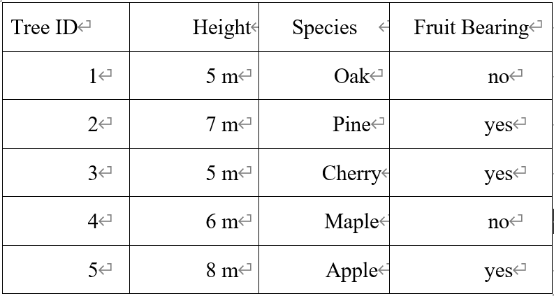
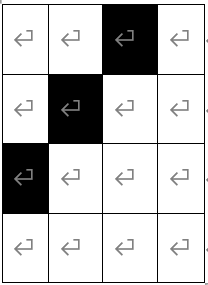
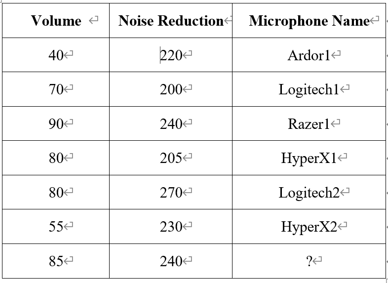
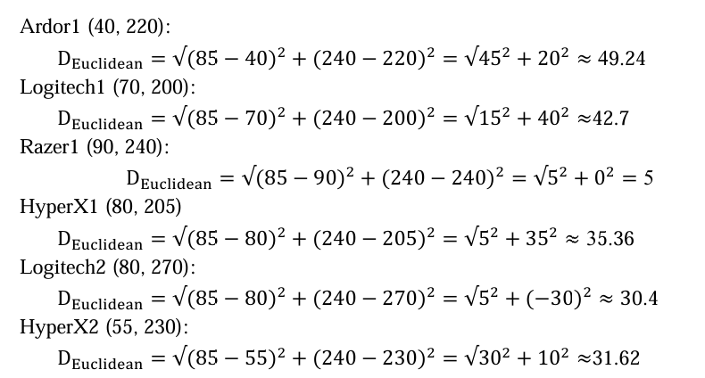
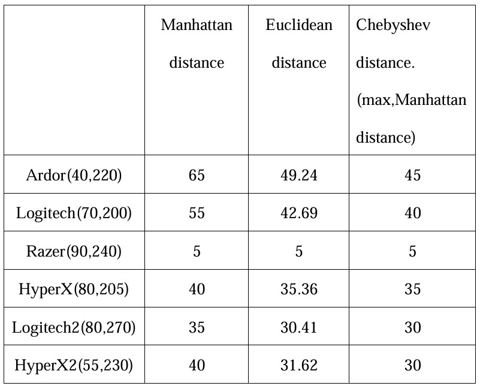

Practical Work Assignment 1
Problem Overview:
Design a data table containing the following types of attributes: numeric, ordinal, nominal, and binary. Then, calculate the mean, median, and standard deviation for numeric features, and the mode for binary features.
Task Requirements:
1. Design the data table
2. Calculate statistical measures for numeric features
3. Calculate the mode for binary features

Average of Height=(5+7+5+6+8)/5 = 31/5 = 6.2
Median of Area: Arrange heights in ascending order: 5 m, 5 m, 6 m, 7 m, 8 m Identify the middle value: 6 m
Standard Deviation of Area：√(((5-6.2)^2+(7-6.2)^2+(5-6.2)^2+(6-6.2)^2+(8-6.2)^2)/5)
(5-6.2)^2=1.44
(7-6.2)^2=0.64
(5-6.2)^2=1.44
(6-6.2)^2=0.04
(8-6.2)^2=3.24
√(((5-6.2)^2+(7-6.2)^2+(5-6.2)^2+(6-6.2)^2+(8-6.2)^2)/5) = √1.36≈1.17
“no”，“yes”，“yes”，“no”，“yes”
"yes" appears 3 times
"no" appears 2 times
Mode of Elevator Availability: yes
Problem Overview:
Binary encoding is the process of converting information such as images or text into a form of 0s and 1s. In image processing, this typically means converting each pixel of an image into its corresponding binary value. Specifically, each pixel of the image is converted into a number (such as a grayscale or RGB value), and then these numbers are converted into binary representations, ultimately forming a binary vector.

Encoding：0010010010000000
Problem Overview:
Determine which category an unlabeled object belongs to. Use the KNN method for classification.
Task Requirements:
1. Use the K-Nearest Neighbors (KNN) algorithm to determine the category of the unlabeled object.
2. Use three different distance metrics for KNN calculations:
Manhattan Distance
Euclidean Distance
Chebyshev Distance
3. Calculate the distance between the object and labeled data points, and use majority voting among the K nearest neighbors to determine the category of the unlabeled object.

Manhattan Distance Calculation:
Ardor1 (40, 220):
DManhattan=∣85−40∣+∣240−220∣=45+20=65
Logitech1 (70, 200):
DManhattan=∣85−70∣+∣240−200∣=15+40=55
Razer1 (90, 240):
DManhattan=∣85−90∣+∣240−240∣=5+0=5
HyperX1 (80, 205):
DManhattan=∣85−80∣+∣240−205∣=5+35=40
Logitech2 (80, 270):
DManhattan=∣85−80∣+∣240−270∣=5+30=35
HyperX2 (55, 230):
DManhattan=∣85−55∣+∣240−230∣=30+10=40
Euclidean Distance Calculation:

Chebyshev Distance Calculation:
Ardor1 (40, 220):
DChebyshev=max(∣85−40∣,∣240−220∣)=max(45,20)=45
Logitech1 (70, 200):
DChebyshev=max(∣85−70∣,∣240−200∣)=max(15,40)=40
Razer1 (90, 240):
DChebyshev=max(∣85−90∣,∣240−240∣)=max(5,0)=5
HyperX1 (80, 205):
DChebyshev=max(∣85−80∣,∣240−205∣)=max(5,35)=35
Logitech2 (80, 270):
DChebyshev=max(∣85−80∣,∣240−270∣)=max(5,30)=30
HyperX2 (55, 230):
DChebyshev=max(∣85−55∣,∣240−230∣)=max(30,10)=30

According to the results of the three distance measures, the most common category among the nearest neighbors is Logitech (in Manhattan, Euclidean, and Chebyshev distances). Microphone Name is Razer
microphone_data = [
{"Name": "Ardor1", "Volume": 40, "Noise Reduction": 220, "Class": "Ardor"},
{"Name": "Logitech1", "Volume": 70, "Noise Reduction": 200, "Class": "Logitech"},
{"Name": "Razer1", "Volume": 90, "Noise Reduction": 240, "Class": "Razer"},
{"Name": "HyperX1", "Volume": 80, "Noise Reduction": 205, "Class": "HyperX"},
{"Name": "Logitech2", "Volume": 80, "Noise Reduction": 270, "Class": "Logitech"},
{"Name": "HyperX2", "Volume": 55, "Noise Reduction": 230, "Class": "HyperX"}
]
unknown_object = {"Volume": 85, "Noise Reduction": 240}
def manhattan_distance(a, b):
return abs(a["Volume"] - b["Volume"]) + abs(a["Noise Reduction"] - b["Noise Reduction"])
def euclidean_distance(a, b):
return ((a["Volume"] - b["Volume"]) ** 2 + (a["Noise Reduction"] - b["Noise Reduction"]) ** 2) ** 0.5
def chebyshev_distance(a, b):
return max(abs(a["Volume"] - b["Volume"]), abs(a["Noise Reduction"] - b["Noise Reduction"]))
# Distance calculation and output
for data in microphone_data:
manhattan = manhattan_distance(unknown_object, data)
euclidean = euclidean_distance(unknown_object, data)
chebyshev = chebyshev_distance(unknown_object, data)
print(f"Calculating distances to {data['Name']} ({data['Class']}):")
print(f"Manhattan distance: {manhattan}")
print(f"Euclidean distance: {euclidean}")
print(f"Chebyshev distance: {chebyshev}")
print("")